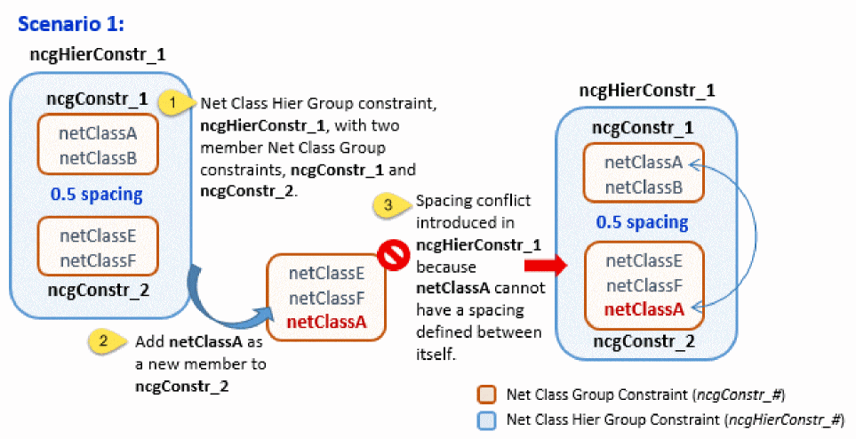
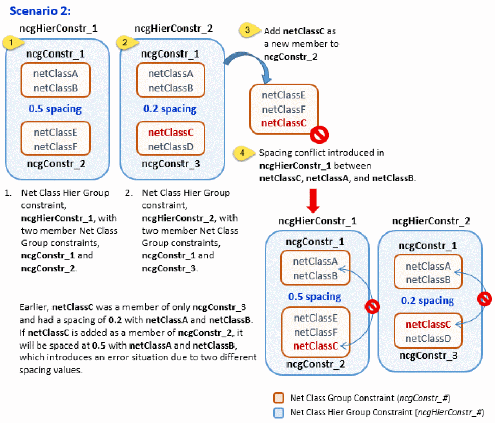

A
Default Constraint Types
A constraint type is a formal definition of a design annotation that describes required electrical or physical relations between a set of design objects (constraint members) through a set of pre-defined constraint parameters.
config.xml. You can also use this file to override definitions of the existing custom constraint types and extend definitions of any system constraint type. For detailed information, refer to Customizing Constraint Types Using a Configuration File in the Virtuoso Unified Custom Constraints Configuration Guide.This appendix contains information on the following:
- Constraints in Virtuoso Schematic and Layout Editing Environment
- Constraints in Virtuoso Parasitic Aware Design Environment
- Axis Parameter
- Widths Minimum Parameter
- Spacing Parameter
- Parameter Types
- Support of Shapes
Constraints in Virtuoso Schematic and Layout Editing Environment
| Schematic Constraint Manager Toolbar | Layout Constraint Manager Toolbar | ||
|---|---|---|---|
Alignment
|
The Alignment constraint defines alignment between members of the constraint. Its most important parameters are side and use, which define the reference for the alignment.
The parameter anchor may be set to the value true for zero or one members. If a member’s anchor parameter is set to true, then it is defined as the “leader” in the member set. The preserveOrder parameter keeps the members in the same spacial order along the axis of alignment. The alignment constraint accepts an Axis Parameter. If no axis is specified, the constraint uses a default axis. Two alignment constraints that have a default axis do not always or necessarily share the same axis. |
|
|
In addition to the parameters Name, Enabled, and Notes, you can set the following parameters:
There is no way to disable the status value in schematic. Users should ignore it, except for Matched Parameter.
For more information on the use of “edgeNumber”, and its use in the Virtuoso Custom Digital Placer, see the Placement Constraints section in the |
|
|
|
|
|
|
Two or more instances, modgen constraints or figGroups, or regular figGroups, pins, terminals, shapes. One or more pins can be members along with a boundary. Alignment constraints that have pins as members, should align to the PR Boundary edge specified by the side parameter on the constraint (left, right, top, bottom) only if a PR Boundary is also a member of the constraint. If an alignment constraint contains pins as members, but has no PR Boundary object as a member, the pins should align anywhere on the canvas, but not snap to PR Boundary edge.
Each individual member of an alignment constraint can have a different set of parameters, for example, one member can be placed ABOVE and one member BELOW the horizontal axis, using the side parameter of each member. If the value is specified on the member, then that value will be user, otherwise the value set on the constraint will be inherited for all members that do not have an explicit value. Alignment algorithms will respect the individual values of each member.
Member order is important
when the parameter preserveOrder is set to |
|
|
Area Pin Group Guide
|
The Area Pin Group Guide constraint defines the placement of pin members within the guide regions defined by its area boundary members. |
|
|
In addition to the parameters Name, Enabled, and Notes, you can set the following parameters:
|
|
|
|
|
The Area Pin Group Guide members are one or more pins, plus one or more area boundaries. The area boundary members define the regions in which the pin members can be placed. |
|
|
Bus
|
The Bus constraint is used to create new groups of nets that routers can then use as buses. The nets constrained will therefore be routed physically as a bus in the layout, following the same topology and spacing.
|
|
|
In addition to the parameters Status, History, Name, Enabled, and Notes, you can set the following parameters:
|
|
|
For more information on the Default Group, see The Process Rule Editor. For more information on customizing constraint groups, see Customizing a Constraint Group.
|
|
|
|
Cell Boundary
Cluster
|
The Cluster constraint defines sets of instances and/or other clusters that exist in relatively close proximity. Both cluster selection and creation can be achieved using the Constraint Manager assistant. Clusters can be created on a single schematic instance, hierarchical or otherwise, and successfully transferred to layout following the physConfig. To do this, use one of the following methods:
When you select a member of a Cluster constraint in the canvas, it gets cross-highlighted in the Constraint Manager. If the associated Cluster constraint is a member of a Cluster Boundary constraint, then that Cluster Boundary constraint also gets highlighted. The image below illustrates these scenarios from the Layout XL canvas. |
|
|
As illustrated below, when a cluster constraint is selected in the Constraint Manager assistant, the cluster boundary of which the constraint is a member gets cross-highlighted. The cluster boundary also gets haloed in the canvas.  The Constraint Manager assistant also supports the creation of hierarchical clusters, that is, clusters within clusters. For example, you can create a hierarchical cluster based upon the selection of existing clusters in the Constraint Manager assistant.
The constraint checker cannot recognize certain types of user-defined Pcell guard ring instances and as a result, reports them as violating cluster constraints. To ensure that the constraint checker ignores such Pcell guard ring instances, set the caeIgnoreInCluster property on the specific guard ring instance or its supermaster (to ignore all instances of that supermaster).
|
|
|
One or more instances, modgen constraints or figGroups, regular figGroups (equivalent to adding the individual members), and/or other clusters. Membership follows oaCluster rules and the cluster tree must be a partition (one member in one cluster at most).
In the front-end, Cluster constraints can only be created on scalar instances and vector bit instances, not on vector instances. This is because scalar and vector bit instances accurately describe the layout objects and design intent, while also being natively supported in the database.
Clusters that are selected in the Constraint Manager assistant should form part of the selected set. This is important in allowing constraints to be created containing hierarchical clusters. The Constraint Manager will also consider any clusters currently selected to be part of the selected set when a Guard Ring constraint is created. This allows clusters to be members of Guard Ring constraints. For example:
A Cluster constraint can also be a constraint container. That is, it can contain its own members and also be used as a member itself for other constraints. |
|
Example: How to Add Cluster Members
The following example details how to include additional members on a cluster constraint using the ciConUpdateMembers API:
procedure(doClusterBoundaries(cv cache name align)
let((conname1 conname2)
printf("name in doClusterBoundariess is %L\n" name)
if(align then
if((conname1 = ciConFind(cache name)) then
printf("adding in doClusterBoundariess is %L\n" align)
ciConUpdateMembers(conname1 append(align foreach(mapcar x ciConListMembers(conname1) list(car(x) cadr(x)))))
else
printf("creating in doClusterBoundariess is %L\n" align)
conname1 = ciConCreate(cache 'cluster
?members align
?name name
)
ciConCreate(cache 'clusterBoundaryDef
?members list(list(name 'cluster))
?params list(list("boundary" x=getBoundary(cv "upper")) list("flexibleFlag" 1))
)
)
)
printf("names = %L\n" ciConListMembers(conname1))
)
)
Cluster Boundary
Correlation
Diff Pair
|
The Diff Pair constraint defines a specialty routing relationship between two nets. The nets should be routed together in order to minimize variations from spacial dependent effects.
For more information, see |
|
|
See also Diff Pair Parameters and the Process Rule Editor for additional Diff Pair parameter information.
In addition to the parameters Name, Enabled, and Notes, you can set the following parameters:
|
|
|
|
|
|
|
A given net may belong to only 1 specialty routing constraint (for example, Symmetry, Diff Pair, or Matched Length). |
|
Diff Pair Parameters and the Process Rule Editor
The following Diff Pair constraint parameters allow to edit the process rules in
Disable Permutation
Distance
|
The Distance constraint defines the distance between two or more constraint members. The parameters Min and Max define the range for the distance. The parameter reference can be used as a constraint parameter or as a member parameter, and specifies the reference to be used for distance constraining, for example one of “edge”, “center” or “origin”. When a Distance constraint has more than two members the Distance constraint applies between the first and any of the following objects. That is, each of the second and following objects must be within the specified range from the first object. The Distance constraint accepts an Axis Parameter. Specifying an axis will restrict the constraint to one particular direction. If no axis is specified then the Distance constraint is bidirectional, applying in two dimensional space as a Manhattan distance. The same pair of objects can be part of two Distance constraints as long as both specify an axis and the axes are orthogonal. Two constraints with the same members, but orthogonal axes, should be used to set different vertical and horizontal allowed distances. See also: Measuring a Distance Constraint When No Axis is Specified. |
|
|
In addition to the parameters Name, Enabled, and Notes, you can set the following parameters:
For the Min and Max parameters, see also Example Uses of the Min and Max Distance Parameters.
|
|
|
|
|
|
|
One or more instances, pins, shapes, modgen constraints or figGroups, or regular figGroups. PRBoundary can also be defined as a member, but this is only supported by the Virtuoso Floorplanner. Member Order is important. When more than two objects are members, the distance between the first and any of the following objects has to be within the (min max) range for the constraint to be enforced. |
|
* For target optimization only and not guaranteed to be met. |
Example Uses of the Min and Max Distance Parameters
Both the Min and Max parameters display a default value of (not set) in the Constraint Manager, for Min that default equates to 0 and for Max it equates to INT_MAX.
The following examples show how you can also set one of these parameters without the need to set the other.
-
No Min or Max values set: Min: (not set), Max: (not set)
- Only Min distance set: Min: 22.5, Max: (not set)
- Only Max distance set: Min: (not set), Max: 44.5
- A range of distance parameters set: Min: 2.5, Max: 22.0.
Measuring a Distance Constraint When No Axis is Specified
A Distance constraint can still be measured if only one Axis Parameter has been specified or if neither axis has been specified.
The figure below shows the following examples of this:
- In the top left, direction is being specified without an axis.
- In the top right, direction is being specified with a horizontal axis only.
- In the bottom center, direction is being specified with a vertical axis only.
Where objects are no closer than min and no further than max. If an axis is specified, the measurement is taken along the direction of the axis.
INT_MAX respectively.The figure above contains examples of the Distance constraint with single or bi-directional axis specified.
If more than two objects form part of a Distance constraint, the distance will be measured between the first object and any other member. The direction in which the distance is measured is unspecified, but wherever necessary should be specified with an ordered Alignment constraint.
The Distance constraint also uses a reference parameter that specifies whether a measurement is in respect to the closest edge orthogonal to the measurement direction (set as, edge), the object bBox center (center), or the origin points (origin).
Edge Pin Group Guide
|
The Edge Pin Group Guide constraint defines the placement of pin members on an edge of the PR boundary. |
|
|
In addition to the parameters Name, Enabled, and Notes, you can set the following parameters:
|
|
|
|
|
The Edge Pin Group Guide members are one or more pins, plus the PR boundary. The PR boundary edge and offsets define the region in which the pin members can be placed. |
|
|
Fixed
|
Sets the placement status on instances and pins, and the routing status on paths, pathSegs, and vias. You can create a Fixed constraint on a Modgen or a figGroup, which in turn creates the necessary Fixed constraint status on the individual member objects.
The Fixed constraint does not support parameter notes and history (timestamp) tracking (see Constraint History). Any fixed constraints that are out-of-context will be purged when the cache is closed.
|
|
|
Name information can be set. Constraint Owner (Lib/Cell/View) information is also provided |
|
Adding and Deleting Nets from a Fixed Constraint
When a net is added to a fixed constraint, all existing shapes on that net will be marked as fixed. However, any new shapes added to that net, after a fixed constraint has already been applied, will not be deemed to be fixed unless the fixed constraint is again re-applied.
A net will appear in a fixed constraint if any of its shapes are marked as fixed. When a net is deleted from a fixed constraint, all shapes will be marked as normal.
Guard Ring
High Precision C Extraction
High Precision R Extraction
Locked
|
Sets the placement status on instances and pins, and the routing status on paths, pathSegs, and vias. You can create a Locked constraint on a Modgen or a figGroup, which in turn creates the necessary Locked constraint status on the individual member objects.
The Locked constraint does not support parameter notes and history (timestamp) tracking (see Constraint History). Any locked constraints that are out-of-context will be purged when the cache is closed.
|
|
|
Name information can be set. Constraint Owner (Lib/Cell/View) information is also provided |
|
Adding and Deleting Nets from a Locked Constraint
When a net is added to a locked constraint, all existing shapes on that net will be marked as locked. However, any new shapes added to that net, after a locked constraint has already been applied, will not be deemed to be locked unless the locked constraint is again re-applied.
A net will appear in a locked constraint if any of its shapes are marked as locked. When a net is deleted from a locked constraint, all shapes will be marked as normal.
You can use the Property Editor assistant or constraint haloing to see which shapes are locked (where only lock shapes will be haloed).
Matched Capacitance
Matched Instance Color
|
In addition to the parameters Name, Enabled, and Notes, you can set the following parameters: |
|
|
The |
|
Matched LDE Parameters
|
The Matched Parameters constraint performs a matching analysis of the drive current across the schematic and the layout views. To create the Matched LDE Parameters, you need to perform the following steps: |
|
|
In addition to the parameters Name, Enabled, and Notes, you can set the following parameters:
The MATCH mode compares across layout devices. For example, if a matching constraint has a threshold of 5%, then any two devices in layout with a saturation current difference of greater than 5% are flagged. The schematic devices are ignored.
In the GROUP mode, each layout device is compared with its schematic version and anything greater than the specified threshold is flagged. Similar to the LDE analysis command carried out using the main LDE GUI, except this comparison is only applied for the selected devices. Use GROUP mode when a general schematic matching of 5% is obtained using the LDE GUI, as this comparison could do a 1% (tighter) check on a sub-set of devices in the layout. |
|
|
|
|
|
|
The Method parameter works as the differentiating factor between two Matched LDE constraints with same set of members. However, this happens only when you enable this parameter. |
|

Matched Length
|
A Matched Length constraint defines a specialty routing relationship between two or more nets. The nets should have the equivalent lengths. It is used to choose the style that the router should use to match length. Each constraint parameter corresponds to the existence of the same named constraint in the Matched Length default constraint group.
For more information, see |
|
|
In addition to the parameters Status, History, Name, Enabled, and Notes, you can set the following parameters:
|
|
|
Additionally, the spacing (for each layer) represents the min spacing default constraint group for Matched Length. Therefore, the Default Group also includes the following parameters: lengthPatternAccordion, lengthPatternDangle, lengthPatternRWAccordion, lengthPatternTrombone, lengthPatternEndRun, msMatchPerLayer, routeMinLength, and routeMaxLength. In addition to the parameters listed above, Default Group has the Wire Types parameter that can be used to define a set of wire types for each layer. For more information, see Assigning a Wire Type to a Net. For more information on the Default Group parameters, see The Process Rule Editor.
|
|
|
|
|
A given net may belong to only 1 specialty routing constraint (for example, Symmetry, Diff Pair, or Matched Length).
|
|
Matched Length Parameters and the Process Rule Editor
The following Matched Length parameters allow to edit the process rules in
Matched Orientation
|
The Matched Orientation constraint implies that the Orientation or the direction is to be matched (that is, identical) for the member instances. |
|
|
Two or more instances, modgen constraints or figGroups, or regular figGroups.
Member order is not currently important, given that |
|
Using the Match Parameter of Matched Orientation Constraint in Layout
The Match parameter of the Matched Orientation constraint helps you to evaluate the selected member instances based on two match criteria, Orientation and Direction.
The following steps show how you can use the Match parameter in layout.
- Select the member instances that need to be evaluated.
-
Choose Constraint Creation — Placement — Matched Orientation. Refer to the figure below.
The generated Matched Orientation constraint is displayed in the Constraint Browser, as shown in the figure above. By default, the Match parameter is set to orientation. If the orientation of the selected member instances matches, the Status parameter displays passed. Otherwise, the Status is displayed as failed. In the latter case, you can initiate re-evaluation by resetting the Match parameter to direction from the list box, as shown above. The selected member instances then get evaluated on the basis of direction and the Status changes to passed if their orientation matches.
The members of a Matched Orientation constraint can also have the parameter, Match, that too accepts one of the following values: orientation or direction.
The table below lists the expected behavior when the Match parameter is set for a Matched Orientation constraint and is set or not set for its member(s):
Matched Parameters
|
The Matched Parameters constraint defines which parameters must match with respect to its members. By default, all parameters must match, but a subset of parameters to be matched can also be specified using the matchSubset constraint parameter.
When specifying a subset of parameters to match, names must be separated by one or more space and/or comma characters. No quotes or double quotes should be used.
If a ratio parameter is set on the first parameter, a warning will be issued by the consistency checker. The constraint will still, however, be accepted and the ratio value ignored for the first member.
For information on how you can check for any mismatched parameters, using the Setup Schematic Rules Check form, see Constraints Checks in the Virtuoso Schematic Editor User Guide.
|
|
|
In addition to the parameters Name, Enabled, and Notes, you can set the following parameters:
|
|
|
The matching of parameters may not always be defined with a 1:1 ratio. For example, the ratio of the number of fingers for each device member of a current mirror versus the driver member (reference) can be the same ratio of the respective current that they each drive. The ratio parameter is defined as: Ratio = (parameter value of the member) / (parameter value of the reference) |
|
|
A reference member will always have a ratio parameter setting of 1 (see Ratio Parameter).
|
|
Setting Match Subset Parameter Values
The Match Subset parameter field lists all the parameter names whose corresponding values must match - or ratio match - for all object members.
By default, the list of parameter names to be matched is set by the following default procedure:
procedure( ciDefaultParamToMatchFilter(inst simulator)
prog((param2DList)
if( ciIsDevice(inst "fet") then
param2DList= ciGetMatchParam2DList(inst "fetParamListForMatching")
)
if( ciIsDevice(inst "resistor") then
param2DList = ciGetMatchParam2DList(inst "resistorParamListForMatching")
)
if( ciIsDevice(inst "capacitor") then
param2DList = ciGetMatchParam2DList(inst "capacitorParamListForMatching")
)
return(param2DList)
)
)
with the list of parameter names per device type defined by:
ciMapParam("fetParamListForMatching" '("model" "w" "l" "m"))
ciMapParam("resistorParamListForMatching" '("model" "w" "l" "r" "m"))
ciMapParam("capacitorParamListForMatching" '("model" "w" "l" "c" "m"))
You can override the above default filter with a different ciDefaultParamToMatchFilter function or create a new filter associated with a new function and register it with:
ciRegisterCustomDeviceFilter(name func)
ciRegisterCustomDeviceFilter("myDefault" `CstMyFilter)
In the Constraint Manager editor, you can also change these values manually by editing the Match Subset parameter field directly. Alternatively, you can edit this list using the Edit Match Subset form which tabulates different sets of parameter names to be matched.
To edit Match Subset parameter values in the Edit Match Subset form:
-
Select the ... (Click to expand editor) option adjacent to the Match Subset parameter.
This will display the Edit Match Subset form. -
In the Edit Match Subset form, select/deselect the parameters that you want to have set by checking/unchecking the available parameters.
-
Once your selection is complete, click OK.
Your new selection will now be displayed in the Match Subset parameter field.
Ratio Parameter
Ratio can be a constraint parameter and its value applies to all members except the first one. Alternatively, it can be a member parameter.
Its value is set to 1 by default.
- The first member is considered as the reference. The value of Ratio for the first member is ignored or always considered as 1.
- For the other members, the value of Ratio is used as a multiplication factor to check whether the value of the parameters given as the matchSubset parameter effectively match or not.
For example, if NumberOfFingers is set as matchSubset and the Ratio of the second member is set to 4, the value of NumberOfFingers for that member must be 4 times the value of NumberOfFingers for the first, or reference, member.
Also, if you changed the Ratio value in the parameter editing table to, for example, 0.7, this will be reflected in the Parameters column of the Constraint browser for each constraint member.
Max Capacitance
Max Coupling Capacitance
Max Resistance
Max Voltage Drop
Overriding Voltage Drop of a Constraint Member
The voltage parameter on the constraint is the default voltage drop for all member instance terminals/pins with respect to the reference instance terminal/pin.
The value set for the constraint voltage parameter can be overridden on individual instance terminal/pin members by setting the member voltage parameter, as shown below.
When you set the member voltage parameter to zero, the voltage value specified for the constraint is used. In addition, the member reference instance terminal must have its voltage set to zero.
Modgen
|
The Modgen constraint defines a two-dimensional arrangement of instances and internal routing for a set of devices.
When you select any dummies from the list displayed on expanding a Modgen constraint in the Constraint Manager assistant, the selected dummies get cross-highlighted in the Modgen canvas editor. Similarly, this useful feature of cross-probing dummies, highlights any selections made on the Modgen canvas editor back in the Constraint Manager assistant.
|
|
|
In addition to the parameters Name, Enabled, and Notes, you can set the following parameters: |
|
|
|
|
In addition to the parameters described above, you can view the Pattern parameter. By default, it is hidden for a Modgen constraint. To make it visible again, you need to set the attribute
visibleInEditor to true in the config.xml file as shown below.<ConstraintType> <Name>modgen</Name> <GUIName menu="Placement">Modgen</GUIName> .... <Param> <Name>pattern</Name> <GUIName summary="ValOnly" visibleInEditor="true">Pattern</GUIName> </Param> .... </ConstraintType> If the Pattern parameter is made visible, it has the following associated attributes: |
|
|
One or more instances and nets (for dummies and body contacts), and/or LCVs (for dummies). MFactor means the same schematic instance can be a member more than one time. Instances may not appear in more than one Modgen constraint. |
|
Net Class
|
The Net Class constraint is used to create groups of nets that have a specific set of constraints (typically process rule overrides) on or between its members, or with respect to other nets in the design. A net class constraint can contain nets.
Creation of nested Net Class constraints is not allowed from IC6.1.7 ISR5 and ICADV12.2 ISR5 onwards. If you have any existing nested Net Class constraints in your design and you try to update them, a warning is displayed in the CIW. To be able to update such constraints, you need to convert one or all nested Net Class constraints in a cache to corresponding Net Class Hier Group constraints by using the ciConvertNestedNetClassToNetClassHierGroup SKILL function.
|
|
|
This group of nets is not useful for any supporting applications until process rules have been added to the group. Collecting the nets in a net class does not have any special meaning for the router. When process rules are applied to the net class, the router respects them (as detailed here). |
|
|
The |
|
|
In addition to the parameters Name, Enabled, and Notes, you can set the following parameters: |
|
|
|
|
If there are similar constraints in the net’s default constraint group, and the Net Class default constraint group, then the net’s default constraint group parameter settings will have precedence. A typical use here would be to route a set of nets with a specific wider width or a net with a specific number of via cuts, or to modify the valid layers for all nets in a netclass.
The Default Group parameters will only be available when the members of a Net Class constraint are nets (that is, not a nested net class).
In addition to the parameters listed above, Default Group has the Wire Types parameter that can be used to define a set of wire types for each layer. For more information, see Assigning a Wire Type to a Net. For more information on the Default Group, see The Process Rule Editor. For more information on customizing constraint groups, see Customizing a Constraint Group.
|
|
|
In addition to these two parameters, you can define the Same Mask parameter to ensure all shapes on a given layer for a net are on the same mask. This parameter allows you to specify the color of the nets in the net class. This can also have a hard or a soft attribute.
The Same Mask parameter is equivalent to using the msSameMask constraint. If you reset the value of this constraint, the color of the nets should be reset accordingly.
|
|
|
The layout below shows the implementation of a Net Class constraint on a single net when Same Mask is set to
The layout below shows the implementation of a Net Class constraint on multiple nets when Same Mask is set to The Within Group parameters are available only when the members of a net class are nets (that is, not a nested net class). For more information on the Within Group parameters, see The Process Rule Editor. |
|
|
|
|
|
The following figure shows constraints applied between nets in a net class and all other nets:
Net Class Group
|
The Net Class Group constraint is used to create a group of one or more members belonging to the following routing-related constraint types: Diff Pair, Bus, Matched Length, Net Class, Strand, and Symmetry. |
|
For a video demonstration, see Creating Net Class Hier Group Constraints on Cadence Online Support.
|
|
|
You can set the following parameters: Name, Enabled, and Notes. |
|
|
One or more constraints of the following types: Diff Pair, Bus, Matched Length, Net Class, Strand, and Symmetry (containing only nets as members). |
|
Important Points to Note During Net Class Group Constraint Creation
-
A member of one Net Class Group constraint can also be a member of another Net Class Group constraint, as shown below.
- You can also add new members to an existing Net Class Group constraint by drag and drop.
-
The same member can be added to multiple Net Class Group constraint, as shown below. As a result, any combination of members can be selected to create a Net Class Group constraint.
- For creation of a Net Class Group constraint, no checks are performed for legal or illegal members. However, when you create a Net Class Hier Group constraint, such checks are performed to ensure that there are no spacing-related conflicts. For detailed information, refer to Important Points to Note During Net Class Hier Group Constraint Creation section.
- A Net Class Group constraint cannot contain nested Net Class constraints.
- Symmetry constraints containing instances and modgens cannot be added as members to a Net Class Group constraint. Symmetry constraints with only nets are allowed.
Net Class Hier Group
|
The Net Class Hier Group constraint is used to create a group of one or more members belonging to the following routing-related constraint types: Diff Pair, Bus, Matched Length, Net Class, Net Class Group, Strand, and Symmetry. A Net Class Hier Group constraint has no limitation to the number of members that can be added to it. To create a Net Class Hier Group constraint,
|
|
Creation of a Net Class Hier Group constraint is useful when there is a need to define spacing between a set of different constraint types. The defined spacing applies to each member of a Net Class Hier Group constraint if it does not contains a Net Class Group constraint, as shown below. |
|
|
If the Net Class Hier Group constraint contains a Net Class Group constraint, the members of the Net Class Group constraint are treated as a single entity. Therefore, the spacing applies to the complete Net Class Group and not its individual members.
You can also define spacing between the existing member constraints of a Net Class Hier Group and another constraint that is not a member already. For example, in the illustration above, you added Diff Pair ( |
|
|
When the pointer starts to show a plus ( |
|
|
The Net Class Hier Group constraint starts to reflect the new addition, as shown below. |
|
|
If you want to space out a constraint from a set of constraints, first create a Net Class Group constraint on the combined set of constraints and then create a Net Class Hier Group constraint with that Net Class Group constraint and the other constraint as members, as shown below.
For a video demonstration of the process discussed above, see Creating Net Class Hier Group Constraints on Cadence Online Support.
|
|
|
In addition to the parameters Name, Enabled, and Notes, you can set the following parameter:
|
|
|
One or more constraints of the following types: Diff Pair, Bus, Matched Length, Net Class, Net Class Group, Strand, and Symmetry (containing only nets as members). |
|
Important Points to Note During Net Class Hier Group Constraint Creation
- A Net Class Hier Group constraint can contain any number of members; there is no restriction. However, consistency checks are performed to avoid spacing-related conflicts between the members of the Net Class Hier Group constraint especially when it contains a Net Class Group constraint.
-
A member of the supported constraint types can exist in more than one Net Class Group and Net Class Hier Group constraint, as shown below.
-
A Net Class or Net Class Group constraint cannot be a member of multiple Net Class Hier Group constraints because difference in spacing might create ambiguity. For example, there are four net classes – A, B, C, and D. There can be two Net Class Hier Group constraints on (A,B) and (C,D) with certain spacing values. Now, if a new Net Class Hier Group is created on (A,B,C,D) with a different spacing value, it might cause a conflict with the originally defined spacing between (A,B) and (C,D).
The figures below illustrate some spacing-related conflicts:

-
When you drag and drop a new member to add to a Net Class Group constraint that is a member of a Net Class Hier Group constraint, checks are performed for spacing. If a spacing-related conflict is found between the Net Class Group’s new member and the Net Class Hier Group’s existing members, a warning is displayed in the CIW and the new member is not added to the selected Net Class Group constraint. The figures below illustrate scenarios of spacing-related conflicts in such condition:
 -
If a Net Class Group constraint exists with a specific set of members, you cannot create a Net Class Hier Group constraint using this Net Class Group constraint and its members individually, as shown below:
-
Definition of spacing at the level of hierarchically-nested Net Class Group constraints is not allowed. As a result, a scenario as shown in the figure below generates an error:
However, a scenario like the one depicted in the figure below is acceptable:
- A Net Class Hier Group constraint cannot contain nested Net Class constraints.
- Symmetry constraints containing instances and modgens cannot be added as members to a Net Class Group constraint. Symmetry constraints with only nets are allowed.
See also the Important Points to Note During Net Class Group Constraint Creation section.
Net Priority
|
The Net Priority constraint defines the order of priority when routing a net. The higher the value, the higher the priority. A higher priority implies that the net is more critical and therefore needs to be routed more optimally (in terms of wire length as well as any user defined constraint on it), even if that makes routing of the lower priority nets less optimal. When a placement tool supports the net priority constraint, it will place together the devices that are inter-connected with high priority nets to minimize the length of these nets.
When you attempt to create a Net Priority constraint in the Constraint Manager, the Create Priority window will be displayed prompting you to enter a Priority for the constraint being created. Do not enter a value of
If you create a Net Priority constraint using the Create Default Constraints option in the Circuit Prospector assistant, a default priority value of 64 will be set for non-supply nets.
The net priority constraint does not support parameter notes and history (timestamp) tracking (see Constraint History). Any Net Priority constraints that are out-of-context will be purged when the cache is closed.
|
|
Orientation
|
The Orientation constraint defines the allowed orientations for the members of the constraint via its parameter Orientations. More than one orientation is allowed. |
|
|
In addition to the parameters Name, Enabled, and Notes, you can set the following parameters:
|
|
|
For a Mirror Symmetry constraint with a horizontal axis, the legal pairs of respective orientations are: |
|
|
One or more instances, modgen constraints or figGroups, or regular figGroups.
In the case of an orientation and Matched Orientation constraint sharing two members, any implicit matched orientation specified in an Orientation constraint is required to be explicit in a Matched Orientation constraint.
|
|
Pre-Set and Custom Orientations
The Orientations parameter of the Orientation constraint provides four options to choose from: All, Vertical, Horizontal, and Other.
When you create the Orientation constraint, the Orientations parameter in the Constraint Parameter Editor pane shows All as selected by default.
Clicking the button adjacent to the Orientations parameter or selecting Other... from the drop-down list box opens the Select Allowed Orientations form. When All is selected and you click the button to open this form, all check boxes on the form appear selected, as shown in the figure below.
The All setting applies all possible orientations to the selected Orientation constraint, whereas selecting Vertical or Horizontal applies only the pre-set associated orientations to the constraint. For example, if you change the Orientations parameter selection in the Constraint Parameter Editor pane from ALL to Horizontal, the constraint orientation settings change automatically.
In addition to being able to choose orientation settings of All, Horizontal, or Vertical, you can select Other... that displays the Select Allowed Orientations form with all check boxes deselected, as shown below.
From here, you can choose your own, single or multiple, custom orientations.
When you open the Select Allowed Orientations form for an existing Orientation constraint, on initial display, the form appears pre-populate with the orientation settings that you saved for it last, as illustrated below.
Once you have selected the required orientation, the orientations are applied to the selected Orientation constraint and listed in the Orientation’s parameter drop-down list box for future use.
Different Orientation Options on the Select Allowed Orientations Form
By default, devices are considered as:
When you open the Select Allowed Orientations form for a constraint that contains only 'default', the form has the orientation options shown in the following figure:
Devices registered as 'r0isHorizontal' are considered as:
When you open the Select Allowed Orientations form for a constraint that contains only device registered as 'r0isHorizontal', the form has the orientation options shown in the following figure:
When you open the Select Allowed Orientations form for a constraint that contains both types of devices (that is horizontal and vertical), the form has the orientation options shown in the following figure:
In this situation, the meaning of horizontal and vertical cannot be applied because the orientations are inverted for devices registered as r0isHorizontal compared to default device. The vertical and horizontal preset does not appear in the drop-down list box to edit the constraint value.
Placement Path
Process Rule Overrides
|
Process Rule Overrides (PRO) can be used to override, on a given object, the generic foundry and design process rules with specific, more stringent, rules as defined in Constraint Groups (which are stored in designs or technology files and act as a collection of process constraints that are applicable to the objects in a design).
A PRO constraint can be created for an entire design if nothing is currently selected (using the Constraint Creation pull-down in the Constraint Manager or the right-mouse button context menu). Here, the parameters will be the same as those available for PRO constraints created on nets.
The status (passed or failed) of Process Rule Override constraints will be updated when the Verify – Design command is run in VLS (the Process Rules tab is used to configure verification settings).
When DRD (design rule driven) markers exist in a design, they should be read, processed, and then have their Constraint Status updated to ensure that their display setting is current for Process Rule Override constraints.
When a process rule violation exists, any process rule override constraint on a net, or on a net class associated with a marker created, will be marked as failed. All other process rule override constraints will be considered as passed if no violation is found on any shapes associated with their nets. When PRO constraint is created or transferred, it immediately takes the name of its constraint group, which is generated as CG_<number>. |
|
|
See also Process Rule Override Parameters and the Process Rule Editor (PRE) for more information on the PRO parameters detailed below and also additional PRO parameters.
|
|
|
The Input/Output Taper constraint group parameters are used to reflect the contents of the nets Input/Output taper default constraint group. Constraints can be placed here to locally override rules obtained through standard lookup. Overridden rules in this location are only valid when set within a halo on a net near an Input/Output pin. The halo is specified using a Halo parameter in either of these constraint groups. Typical use here would be to allow routing in poly near poly pins, or some other relaxation of standard constraints to be able to route to a pin. See also Custom Parameter Value (for Process Rule Override Parameters)
|
|
|
The above parameters can be used as shortcuts to edit process rules with the PRE. You can edit the most commonly changed parameters for routing constraints directly in the Constraint Manager. Furthermore, if there are no overrides in the PRE for these values, a lookup is performed to let you know which values the router will use for routing (if you hover over them, the associated tooltip will indicate what the value for each parameter will be along with a note about where in the lookup that parameter can be found). The constraints created by these parameters will always be in the constraint group above it in the list (or found via lookup).
|
|
Process Rule Override Parameters and the Process Rule Editor
The following process rule override constraint parameters are reflected in
Custom Parameter Value (for Process Rule Override Parameters)
The Custom parameter value can be used for a number of Process Rule Override constraint parameters including Default, Input Taper, and Output Taper.
This can be used in cases where a net’s default constraint group contains a mixture of individual constraints and references to one, or more, constraint groups (from design or technology information in the Constraint Manager. The Constraint Manager will display this scenario by listing what is currently present, separated by “+”.
For example, if the default constraint group of a net contained 2xWidthDoubleCuts and a further valid via constraint, to additionally restrict vias specifically on this net, then the Constraint Manager assistant would display this as “2xWidthDoubleCuts + Custom”.
Rail
Shielding
|
A Shielding constraint enables specialty routing between nets. The unique net member in the constraint is considered as the “shielded” (or protected) net. That is, it is the net that will be surrounded by a different net. The “different net” that protects the shielded net is considered as the “shield” (or protective) net. A “shield” net can be used in other Shielding constraints, but only as a shield net, never as a “shielded” net. A “shielded” net can belong only to one Shielding constraint.
When specifying the net width and spacing from the shielded net to the shielding nets, you should use |
|
|
For additional information on the available shielding parameters see Shielding Parameters and the Process Rule Editor.
|
|
|
The Shielding parameter is used to enter process rules related to how nets should be shielded.
|
|
|
|
|
|
|
|
|
For more information, see |
|
Shielding Parameters and the Process Rule Editor
The following shielding constraint parameters allow for editing of process rules in
Creating a Shielding Constraint and Setting a Shield Net
To create a Shielding constraint and set the associated shielding net:
-
Select the net that is to be shielded.If you select multiple nets, and try to apply a Shielding constraint, a consistency check warning message is displayed in the CIW.This selection can be made using the Navigator assistant, Search results, or directly from the design canvas.
-
Select the Shielding (Routing drop-down menu) constraint from the Constraint Generator menu on the Constraint Manager.
This will create a Shielding constraint for the selected net. -
Select the newly created Shielding constraint in the Constraint Manager.
-
Using the Shield Net and Shield Net2 parameters, in the Constraint Parameter Editor section of the Constraint Manager, select the net that is to be used as a shielding net by either:
-
Choosing the net from the drop-down list box for the Shield Net parameter.
You will be displayed a list of all the nets which have been registered with the Circuit Prospector as supply nets or have their sigType set to power or ground. - Entering the shielding net name manually into the Shield Net parameter entry field.
-
Clicking the white arrow icon to the right of the Shield Net parameter which will allow you to interactively select, using the mouse, a shielding net from the Navigator, Search toolbar/assistant results, or directly from the design canvas.
-
Choosing the net from the drop-down list box for the Shield Net parameter.
Shielding Parameter Values
The following values can be set for the Shielding parameter:
-
Empty
The default value applied when a Shielding constraint is first created. The rule group (shielding) is created and attached to the selected net. There are no additional process rules associated with the shielding constraints. -
Custom
When selected, the PRE is invoked by default displaying the selected objects.- If only the Shielding constraint is selected (in the Constraint Manager), then the currently selected object is shown in the PRE’s constraint tree. That is, the Shielding constraint and its process rules are displayed.
- If the selection also includes the net to which the constraint was applied, then the PRE will display the Shielding constraint and any other constraint in that net.
-
Parallel (Generate)
Selecting this value will auto-generate a process rule for the Shielding constraint that corresponds to parallel shielding. These rules are shown in the PRE as user-defined constraint groups, populated by shieldWidth (the width of the possible metals) and shieldGap (the gap between the shielding net and shielded net) constraints. The rules are auto-generated, but can be considered as a template that can be modified as required, either by directly editing the generated constraint group on the design tab of the PRE, or copying and pasting the rules to build the desired constraints. -
Tandem (Generate)
As above, but this time a Tandem shielding constraint will be generated, with Tandem Layer Above, Tandem Layer Below, and Tandem Width constraints on the allowed layers. Again, this can be considered as a template for any required customizations. -
Coaxial (Generate)
Again, as above, but this time a Coaxial shielding constraint is generated. The constraint template created here contains combined Tandem and Shield rules (a combination of Parallel and Tandem).
Symmetry
|
The Symmetry constraint is used to define symmetries of instances, nets, modgens and pins about an axis. It allows mirrored and non-mirrored symmetries which can be specified via the constraint’s parameter mirror. The Symmetry constraint accepts an axis. If no axis is specified, a default axis that has default parameters is considered. When you select a symmetry constraint in the Constraint Manager, the members as well as the associated axis are also highlighted (haloed) in the Layout graphical area. |
|
|
In addition to the parameters Name, Enabled, and Notes, you can set the following parameters:
|
|
|
|
|
Constraints can be placed in the default constraint group to locally override foundry rules obtained through standard lookup. Adding a constraint parameter to a Symmetry default constraint group is equivalent to adding the same constraint in each net member’s default constraint group. If there are similar constraints in the net’s default constraint group, and the Symmetry default constraint group, then the net’s default constraint group parameter settings will have precedence. A typical use here would be to route a set of nets with a specific wider width or a net with a specific number of via cuts, or to modify the valid layers for all nets in a symmetry constraint. In addition to the parameters listed above, the Default Group category has the Wire Types parameter that can be used to define a set of wire types for each layer. For more information, see Assigning a Wire Type to a Net. For more information on the Default Group, see The Process Rule Editor. For more information on customizing constraint groups, see Customizing a Constraint Group.
|
|
|
|
|
|
|
One (self-symmetry) or two objects of the same object type. The object type can be: instance, net, modgen constraint (selected in the Constraint Manager), modgen figGroup, regular figGroup, terminal, shape, or pin.
For sharing object members, the constraint must have explicit symmetry axes and not the default Axis Parameter.
|
|
|
Member order is important. When multiple pair or objects, for example, |
|
Voltage Synced Net
|
The Voltage Synced Net constraint identifies whether a pair of synced nets transition in phase with each other, and their delta voltage is calculated differently to the default
The constraint acts as a placeholder for DRD (Design Rule Driven Editing) by identifying the synced nets that require their delta voltage checked. DRD generates spacing markers for any shapes on synced nets that fail Additionally, it is not possible to have multiple voltage synced net constraints on the same net.
(IC23.1 EXL and Higher Tiers) Virtuoso’s VDR flow generates voltage synced shapes on the appropriate LPP for each pair of nets in a group that has this Voltage Synced Net constraint. For more details see Note: The voltageLayerMarkerMapping and voltageLayerPairMarkerMapping constraints specify the LPPs on which the voltage synced nets are generated. |
|
|
In addition to the parameters Name, Enabled, and Notes, you can set the following parameter: Specifies the current hierarchical scope of the constraint as local, below, or above the current cell level. For more details see Pushing and Pulling Constraints in a Schematic or Layout Hierarchy. |
|
Delta Voltage
|
Specifies the delta voltage between two nets.
To create a delta voltage constraint, you need to specify a valid value, which should not be a negative value. For more information, see The constraint defines the maximum voltage difference that can exist between two nets. Any value greater than the defined value results into constraint violation. Delta Voltage option is greyed out when only a single net or more than two nets are selected. A warning displays in CIW if one net (out of the two) is deselected from the deltaVoltage constraint. Same is the case if a net is added in an already existing deltaVoltage constraint. |
|
|
In addition to the parameters Name, Enabled, and Notes, you can set the following parameter: Specifies the current delta voltage of the constraint. |
|
Assigning a Wire Type to a Net
In the Constraint Manager assistant, the following constraint types allow you to assign a specific set of wire types for each layer: Bus, Diff Pair, Matched Length, Net Class, Process Rule Overrides, and Symmetry. To do this, use the Wire Types parameter listed in the Constraint Parameter Editor pane under the Default Group category, as shown in the figure below.
The wire types should be specified as a comma-separated list of strings, as shown in the figure below.
If a comma appears in the wire type name, add a backslash just before the comma to create an escape sequence. For example: myWire\,1and2,myWire3.
If a layer does not have a corresponding entry in the technology file, its value is shown as blank in the Constraint Parameter Editor pane. See Metal6 to Metal11 in the figure above. You can manually add the required wire types for such layers.
If the wire types assigned to each layer are different, (various) is displayed in the cell adjacent to the Wire Types parameter.
To modify the values for all layers simultaneously, enter the required values in the cell adjacent to the Wire Types parameter.
When you view the details of a constraint in the CIW, the Wire Types parameter is identified as allowedWireTypes. It is of string type and is displayed in the following format:
"rowNumber1=list of values:rowNumber2=list of values…"
Here, any comma or colon in the name of a wire type will be displayed in an escape sequence.
For example, if you want to view the details of constraint Constr_0, run the following commands in the CIW:
constraint=ciConFind(ciGetCellView() "Constr_0")
constraint~>parameters
The following result is displayed:
Specifying the Color Mask for Critical Nets in Schematic
Critical nets can be identified in the schematic and then routed on a single mask for each layer. In addition, you can optionally specify the color mask.
To specify color-specific constraints, in the Constraint Manager assistant accessed from Schematic XL, the following parameters are available for setting in the Within Group category for the Diff Pair, Net Class, and Symmetry constraints that contain critical nets:
- Spacing parameter and/or pre-coloring spacing constraint groups.
-
Same Mask parameter set to
truespecifies that all shapes for the nets in the net class must be on the same mask for each routing layer. -
(Optional) Mask Name parameter, as shown below, ensures that shapes will be on the specified color mask for each routing layer for the nets in the net class.
The Mask Name can be set to the desired mask using the drop-down list box that provides the following options:
To update constraints in the layout to match those set in the schematic, do one of the following in the layout view:
- Choose Connectivity – Update – Layout Constraints on the menu bar.
- Click the Update Layout Constraints button on the Constraint Manager toolbar.
Using colorMask Constraint Parameter of msSameMask
Add the colorMask parameter to the msSameMask constraint definition to specify the color mask. This parameter is represented by an integer value as shown in the table below:
Constraints in Virtuoso Parasitic Aware Design Environment
The following constraints are related to Virtuoso Parasitic Aware Design:
Parasitic Estimate
Parasitic Filter
Axis Parameter
An axis is a reference line that is used by some constraints to better describe the relationship of the constraint members. There can be any number of axes in a design, and multiple constraints may reference the same axis. Constraints that use an axis, such as symmetry, alignment, and distance, have an expandable Axis parameter which specifies the axis name.
When expanded, the Axis parameter displays the following sub-parameters:
- direction
-
axisLocation
The value “any” implies that the axis may be moved by editing tools. The value “fixed” implies that the axis is stationary. -
coordinate
The coordinate parameter is read-only when axisLocation is set to “any”. If axisLocation is set to “fixed”, you may specify the position of the axis with the coordinate parameter. -
realizedCoordinate
Modifying axis parameters will modify the axis. As more than one constraint may reference the same axis, modifying axis parameters may affect multiple constraints.
Widths Minimum Parameter
The Widths Minimum parameter in the Constraint Parameter Editor defines a particular set of width values for a given layer-purpose pair (LPP) instead of defining a minimum and maximum width. A width is defined as the shorter dimension of a rectangle.
If the technology database contains width definitions, each LPP listed below the Widths Minimum parameter displays the corresponding minimum width value in the cell adjacent. You can make the required modifications to these width values as detailed in Overriding the Widths Parameter Values.
When you place the pointer on any LPP name listed below the Widths Minimum parameter, the corresponding width values are displayed in the tooltip. If multiple width values are defined, they are all displayed.
Overriding the Widths Parameter Values
To override a single width value, click the cell adjacent to the corresponding net LPP name and enter the required Widths Minimum parameter value.
Multiple width values from a defined range of valid widths associated to a net LPP can be selected for net type constraints: Bus, Diff Pair, Matched Length, Net Class, Process Rule Overrides, and Symmetry. It requires the constraint allowedWidthRanges to have been defined for the layers.
To override a multiple width value, click the cell adjacent to the corresponding net LPP name to display an ellipsis button. Click the button to open the Allowed Width Ranges Form where you can select and deselect multiple widths from a defined range of valid widths associated to a net LPP.
Allowed Width Ranges Form
This form lets you select and deselect multiple widths from a defined range of valid widths associated with a net LPP. It is accessed from the Constraint Parameter Editor by clicking the cell adjacent to a LPP under the Widths Minimum Parameter and clicking the ellipsis button that is displayed.
The range is displayed, grouped by the direction in which it is measured; horizontal or vertical (if specified). By default, the horizontal range is displayed followed by the vertical range.
Spacing Parameter
The Spacing parameter in the Constraint Parameter Editor defines the minimum spacing between a pin and other member pins. It is defined for each layer-purpose pair (LPP) in user units.
If the technology database contains spacing definitions, the cell adjacent to each LPP listed below the Spacing parameter displays the corresponding spacing values. The display of spacing values depends on how they have been defined in the technology database, that is, as a single value or as a one- or two-dimensional table. If an LPP has a single spacing value, it is displayed in the adjacent cell; otherwise, the text view/edit table is displayed. You can make the required modifications to these spacing values as detailed in the Overriding the Spacing Parameter Values section.
When you place the pointer on any LPP name listed below the Spacing parameter, the corresponding spacing values are displayed in the tooltip. The figure below illustrates the display of a tooltip with a two-dimensional table of spacing values for Metal4.
Overriding the Spacing Parameter Values
To override a single spacing value, click the cell adjacent to the corresponding LPP name and enter the required Spacing parameter value, as shown below.
If the LPP’s spacing values are defined in a one- or two-dimensional table, clicking the adjacent cell displays the view/edit table field and the button, as shown below. These two widgets provide you the flexibility to enter a single override value in the displayed field or to view and edit the spacing table in the Layer Spacings form opened by clicking the button.
When you enter a single override value in the view/edit table field, it modifies the table values that are less than the entered value and the rest of the values remain unchanged. In addition, the override value starts to show within angular brackets corresponding to view/edit table in the Constraint Parameter Editor, as highlighted below, and the tooltip display gets updated accordingly.
When you access the Layer Spacings form, the section corresponding to the selected LPP expands by default and contains the spacing table for that LPP. The sections containing details corresponding to the remaining LPPs appear as collapsed. For example, when you click the  button adjacent to the view/edit table field for Metal1, the Layer Spacings form opens with the Metal1 section expanded to show the relevant spacing table. The other sections such as Poly, Metal2, Metal3, and so on are collapsed, as shown below.
button adjacent to the view/edit table field for Metal1, the Layer Spacings form opens with the Metal1 section expanded to show the relevant spacing table. The other sections such as Poly, Metal2, Metal3, and so on are collapsed, as shown below.
You can expand the other LPP-specific sections to view and edit the related spacing values, as shown below.
The expanded section for each LPP has an Override by field where you can specify a single value by which the existing spacing values should be overridden. This field has the same impact on the table values as the view/edit table field.
Every time an override value is provided, it is compared with the reference table and based on that, only those table cell values are modified that are less than the override value. The reference table is obtained from the look-up order Design Process Rule Override --> technology Constraint Group --> Foundry. The figure below illustrates how this is done:
By default, the Override by field displays the minSpacing value; otherwise, it displays the overridden value. If you delete the displayed value from this field and try to leave it blank, the field’s border changes to red, as shown below, and the focus stays on it until you specify a valid value.
Pressing the Enter key after specifying a valid override value in the Override by field, replaces the table values that are less than the entered value. However, if the specified override value is invalid, the table values get reset to the default as per the technology database regardless of any previous valid override (as can be seen in the table of the figure above) and the Override by field gets reset, as shown below.
In addition to overriding spacing values by specifying a single value as explained above, in the Layer Spacings form, you can edit an individual cell value in the spacing table. Each cell of the spacing table has its own minimum spacing value threshold. Therefore, while editing a cell in the spacing table, if you enter a value that is less than the minimum allowable spacing value or greater than the maximum allowable spacing value, the border of the edited cell changes to red and will remain like this until a valid value is entered.

When you place the pointer on a cell, a tooltip displays the minimum allowable spacing value, as shown below.
When you input a spacing value that is not an integral multiple of the manufacturing grid resolution specified in the technology database, the value is rounded off to the nearest integral multiple. For example, if the specified manufacturing grid resolution is 0.005, then the expected spacing values are calculated as follows:
| User Input | Expected Spacing Value |
|---|---|
The modified spacing value is not saved in the technology database. It is instead saved as a process rule override at the object level.
The spacing value can also be viewed or edited from the Process Rule Editor. Any updates are automatically synchronized between the Process Rule Editor and the layer spacing table in the Constraint Parameter Editor.
Keyboard Shortcuts Useful while Editing Values in the Spacing Table
| Keyboard Keys | Use |
|
Shifts the focus from one cell to the other in the same column. |
|
|
Discards the edited spacing value. However, this works only as long as the focus is on the edited cell. |
Suppose you modified the spacing table values or its semantics, that is, you added or removed rows or columns, or changed the table type by using the Process Rule Editor (PRE), such that the object-level constraint has no match with the reference table defined in the technology file or Design-Level Process Rule. You will see the following behavior:
-
In the Constraint Parameter Editor,
- The override value gets removed from the view/edit table cell and you are not allowed to specify a new override value.
- The tooltip shows the spacing table saved from PRE when you move the pointer on the related LPP listed under the Spacing parameter.
-
The tooltip shows a warning message about the inconsistency with respect to the reference table, as shown below:
- In the Layer Spacing form,
To discard the edits done by using PRE, change the value of the Default Group tab from Custom to Empty. This restores the valid default table values.
Parameter Types
The following constraint parameter types are available:
Support of Shapes
It should be noted that the constraints system will only support shapes as constraint members if they have connectivity. That is, if they exist on a net. Currently, the constraint system will not support constraints on shapes, for any application, if they are not on a net.
Return to top